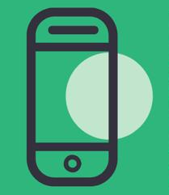
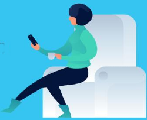

Benefits of Slack
Created by @amandabernardo

What is Slack?
Slack is a collaboration hub that can replace email to help you and your team work together seamlessly.
A Slack workspace is made up of channels, where team members can communicate and work together.
Comparing Plans - Key Differences
Free
- Only the 10,000 most recent messages are searchable
- 5 Gigabyte storage / Workspace
- 1 to 1 voice calls
- Only 10 App integrations
- Limited Analytics
Standard
- Unlimited Messages
- 10 Gigabyte storage / member
- Up to 15 people for voice calls (plus added features)
- Unlimited Apps
- Multi / Single Channel guests
Plus
- All Standard Features
- 20 Gigabyte storage / member
- 24 / 7 support
- Real time Active Directory
- 99.99% guaranteed uptime
Tips for Remote Work
- Create a dedicated announcement channel
- Organize your work by channels (e.g.: a channel per project)
- Connect the tools you use everyday (e.g.: Outlook, GSuite)
- Adopt shared channels (collaborate in / outside your org)
- Post status updates (on a call, having lunch, etc.)
- Make calls without leaving Slack (integrated options)

Security - Using Slack in Government
Slack should only be used for unclassified transitory information. All Government of Canada Information Management policies must be followed when dealing with classified, sensitive or non-transitory information.
For additional support, check out: Should it be blocked in my Department?